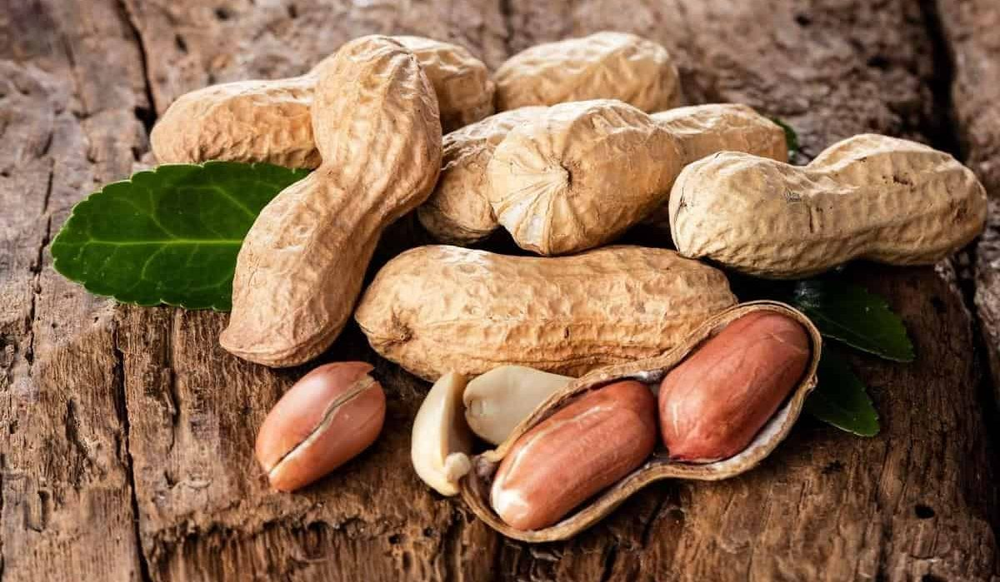
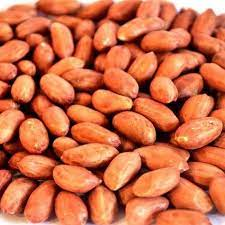
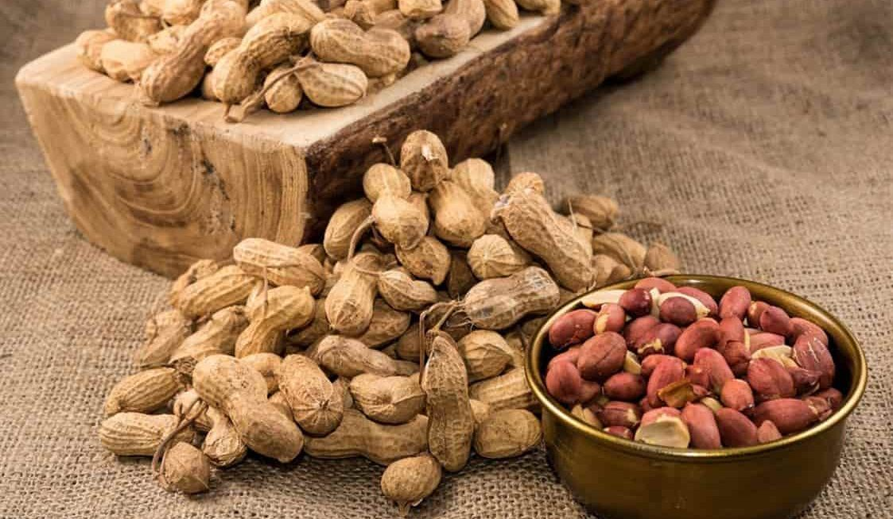
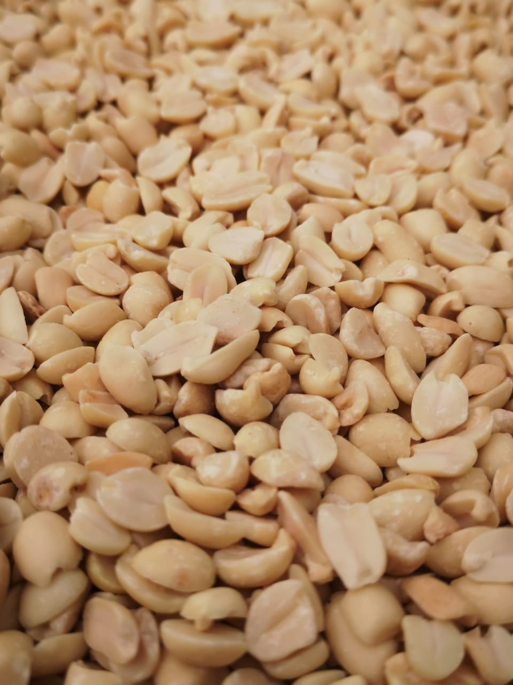

|  |
Peanuts are legumes that grow in South America and are eaten raw, roasted, salted peanuts or peanut butter. |
|  |
Peanuts have many health benefits due to their rich nutritional content, and the health benefits for the body include the following: Peanuts lower cholesterol levels, peanuts reduce the risk of gallstones, reducing the risk of cancer, promoting skin health, alleviating the symptoms of polycystic ovary syndrome, promoting hair growth. Harmful peanuts aflatoxin poisoning: As one of the by-products of mold, the risk of peanuts being contaminated with this substance increases when stored in a high-temperature and humid place, and consuming peanuts contaminated with aflatoxin can cause various symptoms. It affects people's liver disease, and in severe cases, it can lead to liver failure and liver cancer. |
|  |
Peanuts are considered legumes that belong to the pea family, and their seeds are suitable for human consumption and are used in preparing many dishes and recipes. They are commonly used in different parts of the world due to their high nutritional value. It is very rich in protein, fat, etc. Peanuts are an annual plant and need a moderate climate characterized by heat and rain to grow, while their cultivation period lasts about 5 months. It should be noted that there are many forms of peanuts in the markets, and they differ according to the taste of consumers. Some prefer to eat them as peanut butter, while others eat them roasted. |
 |
Served salted or covered with chocolate, the origin and history of peanuts moved throughout South America, then to Spain, and moved to large parts of Africa and Europe, then the Portuguese exported it to the East and it reached China to make China currently the largest producer of peanuts, and make it unique. Homeland of Peanuts Most scientists agree that the South American continent is the original homeland of peanuts. When European explorers discovered the nature of peanuts, they returned them to their countries, then they spread to three continents: Asia, Europe, and Africa. After that, peanut cultivation spread in most cases today, and it should be noted that peanuts did not reach North America except through slave ships. |
|
|
contact us : 01141290786